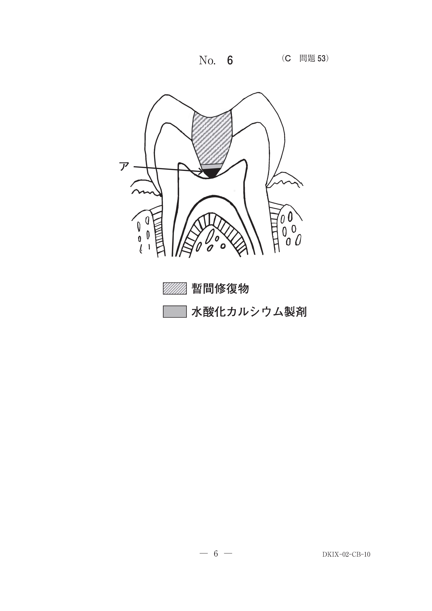

Candida albicans（カンジダ・アルビカンス）の感染による口内炎。義歯床下粘膜に広範な発赤を呈する。口腔清掃不良、栄養状態の悪化、免疫力低下が誘因となる。
禁忌：副腎皮質ステロイド軟膏（真菌感染を増悪させる）
細菌やCandida菌などの微生物の集合体。義歯用ブラシによる機械的清掃と義歯洗浄剤による化学的清掃で除去。
唾液中のカルシウムが沈着したもの。義歯用ブラシでは除去困難。酸溶液への浸漬で除去する。
義歯用ブラシで除去できない歯石様沈着物は酸溶液への浸漬で除去する。中性洗剤、超音波洗浄、スチームクリーナーでは除去困難。
下顎全部床義歯の写真（別冊No.10）を別に示す。矢印で示す付着物を義歯用ブラシで洗浄したが、ほとんど除去できなかった。
除去法として適切なのはどれか。1つ選べ。

【解説】義歯用ブラシで除去できない歯石様沈着物は酸溶液への浸漬で除去する。カルシウム成分を酸で溶解させる。サンドブラスターは義歯床を傷つける可能性がある。